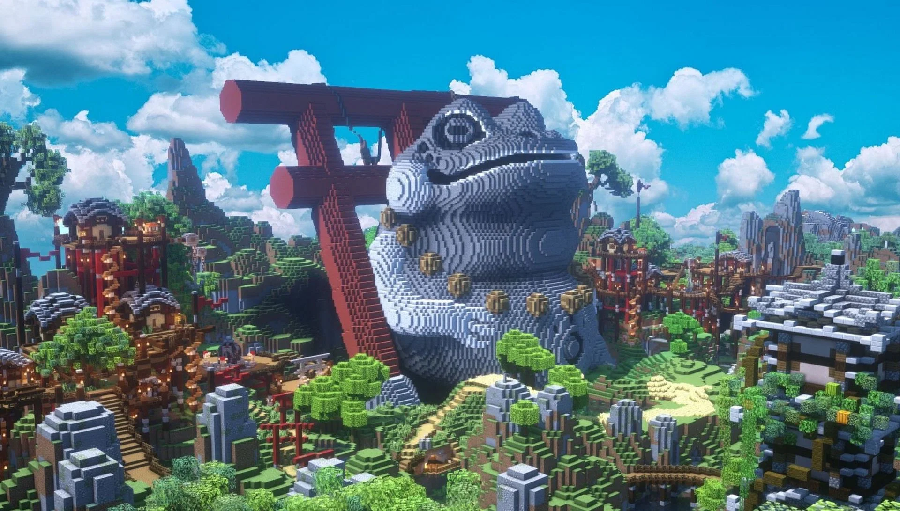

Minecraft
A minecraft egy nyílt világú, sandbox típusú játék, ahol a játékmenet sokszínűsége és hangulata szívja be a játékost.
A játékot Markus "Notch" Persson tervezte 2009-ben, eredetileg egy egyszerű építős játékként képzelte el, de hamarosan világszerte ismertté vált.
A jatékot Mojang adta ki 2011-ben. A Microsoft 2014-ben vásárolta fel a játék fejlesztésével és kiadásával foglalokozó céget, Mojangot, ezzel együtt lettek a Minecraft tulajdonosi is.
Minden idők legkelendőbb játéka a Minecraft: 2023 októberére 300 millió példányt adtak el , továbbá 126 millió aktív játékossal rendelkezik.
A Minecraft többféle játékmódot kínál, amelyek mindegyike más élményt nyújt.
A Survival (Túlélő) módban a játékosoknak fontos alapanyagokat kell gyűjteniük, építkezniük és harcolniuk a mobok ellen, miközben figyelniük kell az életerejüket és éhségüket.
A Creative (Kreatív) módban a játékosok korlátlan anyagokkal rendelkeznek, repülhetnek, és szabadon építhetnek anélkül, hogy a mobok vagy az életerejük zavarná őket.
Az Adventure (Kaland) módban előre megtervezett pályákon játszhatnak, ahol az építés és a blokkok törése korlátozott.
A Spectator (Néző) módban a játékosok láthatatlanul és áthatolhatatlanul mozoghatnak a világban, más játékosokat vagy mobokat figyelhetnek meg..
A játékban számos eszköz használható, mint például a balta, amely fák vágására szolgál, a csákány, amivel köveket és ereket lehet bányászni, a kard, amellyel harcolni lehet, az ásó, amivel földet lehet ásni, és a kapa, amivel a földet művelhetjük.
Ezek az eszközök különböző anyagokból készíthetők, például fából, kőből, vasból, aranyból és gyémántból. A receptek a kézműves asztalon találhatók, ahol a megfelelő mintázatban elhelyezett anyagokból készíthetők az eszközök.
A mobok a játékban élő lények, amelyek lehetnek barátságosak, mint például a tehén vagy a juh, vagy ellenségesek, mint a creeper vagy a zombi.
Mindegyik mob egyedi tulajdonságokkal rendelkezik, például a creeper robban, ha túl közel kerül hozzá a játékos.
A blokkok a világ alapvető építőelemei, amelyek különböző anyagokból állhatnak, mint például fa, kő vagy homok.
Minden blokknak megvan a maga tulajdonsága, például a homok gravitáció hatására esik.
A Minecraft közössége számos modot készített, amelyek bővítik a játékot új tartalmakkal és funkciókkal.
Az OptiFine egy népszerű mod, amely grafikai javításokat és jobb teljesítményt kínál.
A Biomes O' Plenty új biomokat és növényeket ad hozzá a világhoz.
A Tinkers' Construct lehetőséget ad fejlett szerszámkészítésre.
A Thaumcraft mágikus elemeket és varázslatokat vezet be a játékba.
A JourneyMap pedig segít a térképkészítésben és a navigációban.
A Minecraft folyamatosan fejlődik, és a közösség által készített modok és térképek hozzájárulnak a játék sokszínűségéhez és hosszú életciklusához. A játék egyszerűsége és mélysége egyaránt vonzóvá teszi minden korosztály számára, és ezért marad tartósan népszerű a világ minden táján.